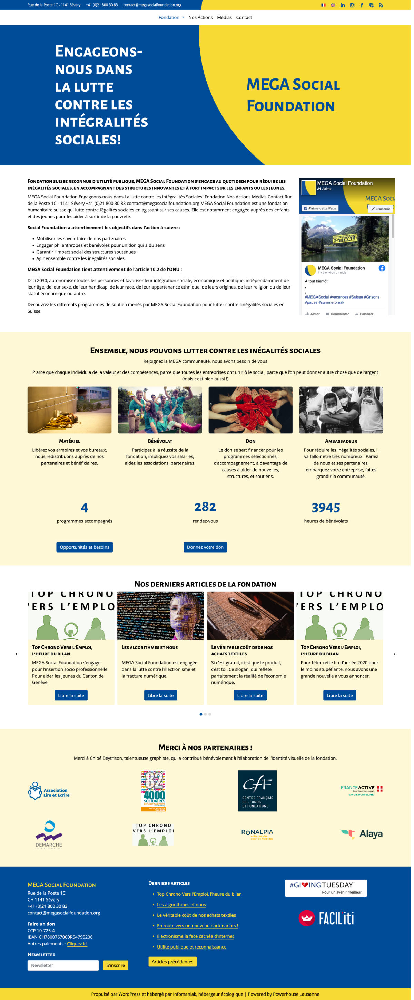
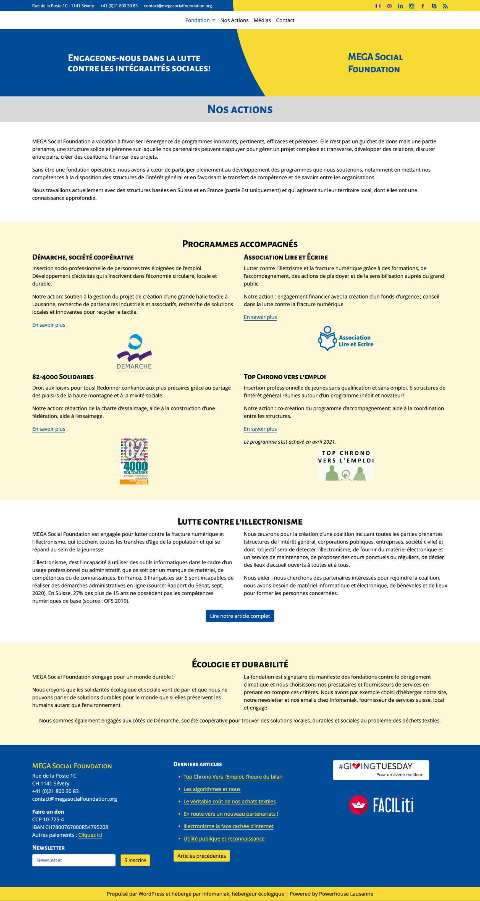
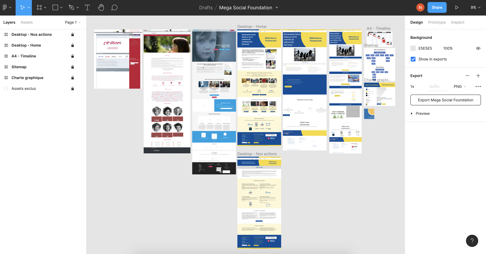

Mega Social Foundation
Je vous présente deux images ce que j'ai construit le site pendant mes cours par Ada:Flow, vous pouvez cliquer un de ces images pour voir l'image entière :
 Je travaille dans un projet de formation nommé Adaflow sous le programme Web 360° de l'association Powerhouse à Lausanne qui a pour 2 objectifs :
- de soutenir l'intégration professionnelle des participant·e·s et de répondre aux besoins du marché.
- de développer sa carrière dans le web et la transformation Digitale.
Voici la base du site de Mega Social Foundation : www.megasocialfoundation.org
La fondation n'ayant pas les moyens financiers pour réaliser leur site, le projet a été proposé aux étudiants du programme, et ainsi de mettre en pratique les appris.
Ma partie, étape par étape :
Un cahier des charges a été réalisé en commun avec les autres étudiants et la cliente. À l'aide de Figma, de la version en ligne du site et des anciennes versions du site récupérées sur archive.org, j'ai réalisé une maquette fonctionnelle:
Cette maquette à été validée par le formateur Yannick Burky avec grande satisfaction.
Construction du site statique
Cette opportunité m'a permis de mettre à jour mes connaissances de Bootstrap, de la version 3 que je connaissais bien, à la version 5 actuelle.
J'ai construit 2 pages : l'accueil et un page contenu.
J'ai présenté mon travail à mon formateur Yannick Burky qui était très satisfait de mon travail. Il m'a donné la permission de poster le code sur Github parce que mon projet n'est pas choisi par le client sur 2 autres projets.
Je vous présente deux pages en ligne :